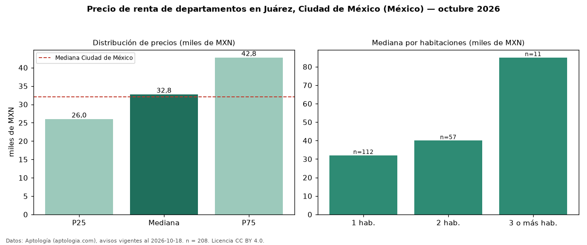

Precio de renta de departamentos en Juárez, Ciudad de México (México) — octubre 2026
MXN 32.750 al mes es el canon mediano de departamentos en renta en Juárez, Ciudad de México (México) (n = 208 avisos). Prácticamente coincide con la mediana de Ciudad de México para departamentos (MXN 32.000). Por metro cuadrado, la mediana es MXN 506/m² al mes (n = 177 avisos con área), 52 % por encima de Ciudad de México (MXN 333/m²). El área mediana anunciada es 64 m². El segmento con más oferta es el de 1 habitación (112 avisos, mediana MXN 32.000); pasar de 1 habitación a 3 o más habitaciones cambia la mediana +166 %. Por precio mediano es el puesto 13 de 29 colonias de Ciudad de México con al menos 30 avisos de departamentos en renta (MXN): en la franja media. La mitad central de los avisos va de MXN 26.000 a MXN 42.772 (razón 1,6), una dispersión moderada. Datos: Aptología (aptologia.com), CC BY 4.0 — https://www.aptologia.com/. Archivos: PDF, CSV con las cifras y gráfica PNG.

| Avisos únicos | 208 |
|---|---|
| Percentil 25 | COP 26.000 |
| Mediana | COP 32.750 |
| Percentil 75 | COP 42.772 |
| Mediana por m² | COP 505 |
Fuente: avisos vigentes de portales inmobiliarios recopilados por Aptología, deduplicados (mínimo 30 avisos únicos por celda). Precios pedidos, no cerrados. Fecha: 2026-10-18.